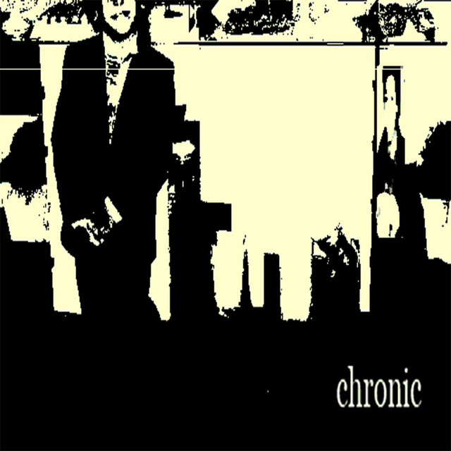

twikipedia
.png)
Twikipedia (Delta) é uma rapper, cantora e produtora de 20 anos de Niterói, Brasil. Antes de focar em uma carreira musical mais séria, ela usou uma variedade de nomes diferentes para produzir principalmente beats e remixes, além de se especializar em um estilo de comedic rap ao longo de 2019, lançando o álbum twikipedia antes começando de novo e começando a levar a música a sério. Mais tarde, ela diria em uma entrevista que “não estava orgulhosa” de suas músicas mais antigas e não recomendam ouvir, a menos que “você goste de ouvir música ruim”.
A Delta está muito ativa no SoundCloud há mais de cinco anos, gerenciando um total de sete contas conhecidas em 2022, embora quatro das sete não estejam mais em uso. Pode-se especular que há mais, mas a Delta não os disponibilizou publicamente. Além disso, ela sente uma grande conexão com suas raízes brasileiras e aprecia muito seus fãs brasileiros; implementando seu idioma nativo do português brasileiro em muitas de suas músicas, principalmente um verso em titles e as músicas completas inferno, senta, e campo. Ela também produz e colabora com o artista brasileiro virgingod de forma bastante consistente.
.png)
Discografia
chronic
Data de lançamento: 2022
songs and music
Data de lançamento: 2020
for the rest of your life

Data de lançamento: 2024
Produtos
Fita Cassete chronic

$11.00
ftroyl CD
.png)
$11.00
ftroyl Disco de Vinil
.png)
$38.00
Vídeo demonstrativo
Aqui temos um vídeo demonstrando as músicas adicionais que o album for the rest of your life tem a oferecer ao comprar o disco de vinil e CD.
Comparação de Formatos
| Formato | Preço | Qualidade de Áudio | Portabilidade |
|---|---|---|---|
| Fita Cassete | $11.00 | Média | Alta |
| CD | $11.00 | Alta | Média |
| Disco de Vinil | $38.00 | Excelente | Baixa |